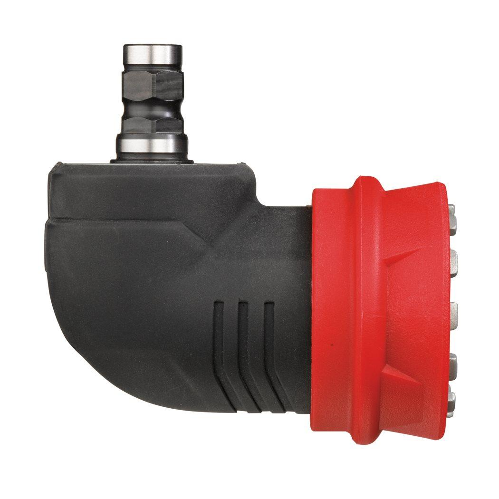
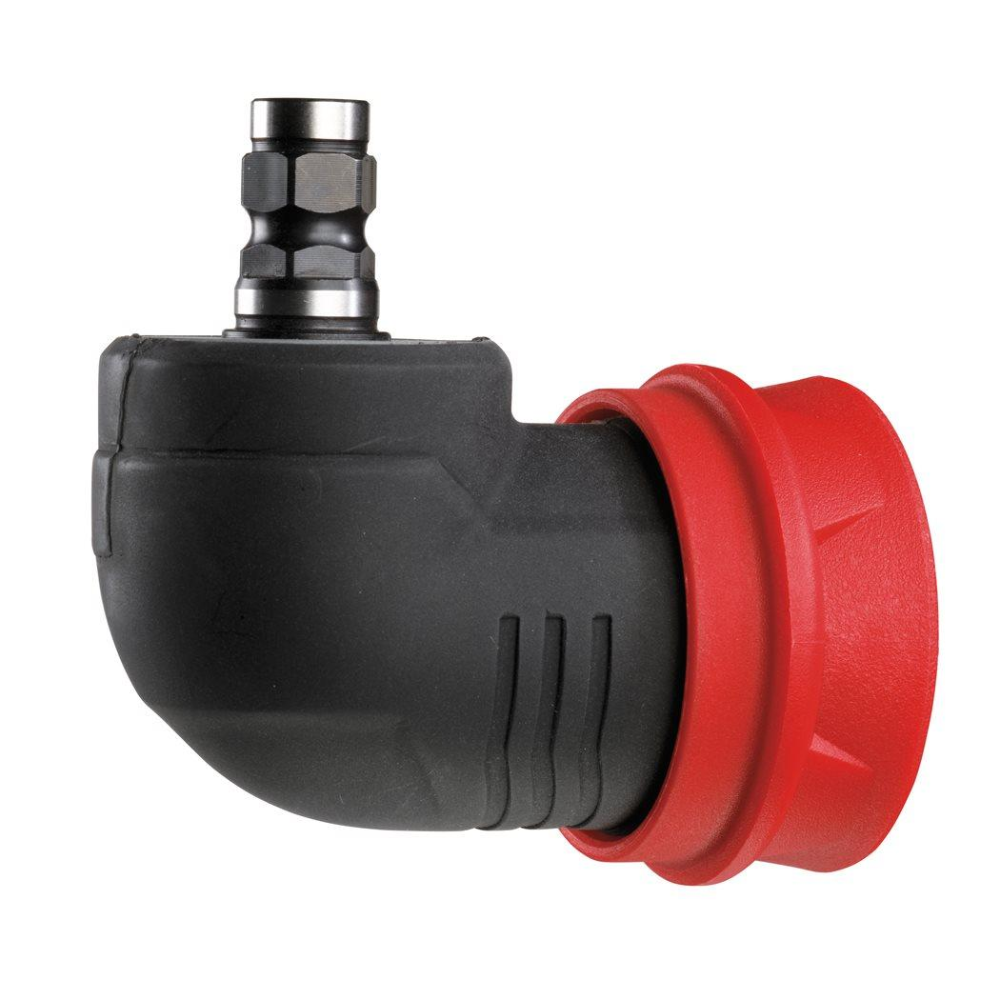

<div style="display:flex;flex-wrap:wrap;gap:8px"></div><h2>Features</h2><div><ul><li>For drilling and driving applications in confined spaces.</li><li>12 fixing positions with quick exchange function for more flexibility at work.</li><li>Direct bit reception for screwdriving up to ⌀ 6 mm screws.</li></ul></div><div><div><h2>Information</h2><table><tr><td>Height (mm)</td><td>54</td></tr><tr><td>Length (mm)</td><td>197</td></tr><tr><td>Max. drilling steel (mm)</td><td>10mm</td></tr><tr><td>Max. drilling wood (mm)</td><td>20mm</td></tr><tr><td>Pack quantity</td><td>1</td></tr><tr><td>Width (mm)</td><td>113</td></tr><tr><td>Article Number</td><td>4932430433</td></tr><tr><td>EAN</td><td>4002395380947</td></tr></table></div><div><h2>Weight</h2><table><tr><td>Weight (kg)</td><td>0.283</td></tr></table></div></div>